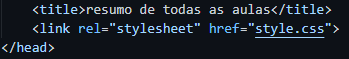

🚨é bom que veja os códigos no vscode, ou no inspecionar do chrome apertando ctrl+shift+i🚨
aula 1
aula 2
aula 3
aula 4
aula 6
aula 7
aula 8
aula 9
aula 10
esse é o meu primeiro (ou quase) documento HTML
você pode escrever um parágrafo de qualquer jeito, basta colocar tudo no meio do par de tags <p> e </p>
para pode quebrar uma linha, basta colocar
a tag <br>
abaixo você vai ver uma imagem que está na mesma pasta
agora vai ser css
também podemos carregar imagens externas

a aula 4 foi apenas sobre como colocar o favicon (imagem que fica no topo, ao lado do nome do site)
para adicionar é bem simples:
...
<link rel="shortcut icon" href="palmeiras2.ico" type="image/x-icon">
<title>teste de favicon</title>
</head>
...
na 6ª, foi apenas sobre hierarquia de títulos:
<h1> > <h2> > <h3>... > <h6>.
html5 é focado em semânticas, não em formas (ficou para css)
não use tags obsoletas
*priorize as <tags> semânticas
nessa frase em negrito foi usada a tag <b> (não semântica).
agora nesta, o negrito foi usado com a tag <strong> (semântica).
nessa frase, temos um termo em itálico usando a tag <i> (não semântica.)
e já nesta, foi usado um termo em ênfase usando a tag <em> (semântica).
podemos criar também um texto marcado usando a tag <mark>
é possível alterar a cor do texto marcado apenas com css, dessa forma:
<mark style="background-color: limegreen;">texto marcado</mark>
ou criando a tag <style> abaixo de <title>, ficando assim:
<title></title>
<style>
mark{
background-color: limegreen
}
</style>
</head>
<body>
...
estamos criando um texto grande usando a tag <big> (tag obsoleta, não use), e um texto pequeno nesse paragráfago usando a tag <small>
podemos marcar um texto excluído que pode ser lido, mas não considerado. usando a tag <del>
podemos marcar um texto como inserido para dar ênfase e indicar que foi adicionado depois, usando a tag <ins> (a tag <u> está obsoleta).
para inserir coisas do tipo x20+3, usando a tag <ins>.
para inserir coisas do tipo H2O, usando a tag <sub>.
a tag <code> deixa assim: com formato de código
a tag <pre> deixa a formatação do código da mesma forma escrita aqui no vscode, com as mesmas quebras de linhas (usei na aula 8), ex:
if number % 2 == 0:
print ('o número é par')
else:
a tag <q> é usada para citações.
ex: como diria o pai de um amigo: o computador é um burro muito rápido
usando a tag <blockquote>
segundo alguém, de algum lugar:
daqui pra frente é só pra trás
usando a tag <abbr>, é possível "colocar" as palavras completas em abreviações, ex (passe o mouse em cima):
estusando HTML e CSS.
use a tag <bdo dir="rtl">frase aqui</bdo> para inverter da direita para esquerda. programar é muito daora
obs: a tag <li> precisa estar no meio das tags das listas, ex:
<ol>
<li>acordar</li>
<li>levantar</li>
</ol>
listas em sequência, que seguem uma ordem. usam a tag <ol>
listas sem sequência, não seguem uma ordem específica. usam a tag <ul>
primeiro o termo, usando a tag <dt>. e depois a descrição com a tag <dd>. ex:
<dt>HTML<\dt>
<dd>linguaguem de marcação para criação de conteúdo de um site<\dd>
você pode acessar o meu perfil público no github
você pode acessar o meu <a href="https://github.com/garciabertoldo" target="_blank" rel="external">perfil público no github<\a>
só de usar a tag <a>, ele já cria um link. mas caso queira que o link seja aberto em uma nova aba, adicione target="_blank" rel="external" após a url, como mostrado acima.
essa é a primeira página do site. se você quiser, também pode acessar a minha segunda página
e este é o link da minha terceira página
(coloquei em formato de lista só para mostrar que posso juntar)
tente abrir esse site em vários dispositivos diferentes ou simplesmente aumente o tamanho do seu navegador.
vamos aprender a reproduzir áudio em html5
alguns outros formatos de áudio: MP3 WAV OGG
formatos WAV costumam pesar muito, então sempre prefira usar MP3 e OGG
este vídeo está hospedado no meu próprio servidor
os formatos mais usados são MP4/M4V e WEBM
o formato .ogv não é muito usado e é mais pesado que os outros, então sempre coloque como última opção dentro do <source>.
fala sobre os meios de inserir o css no html, não use as folhas de estilos na própria linha que deseje alterar, FICA FEIO.
sempre crie uma tag <style> abaixo abaixo do <título> para arquivos de só uma página.
agora para arquivos com mais de uma página, sempre priorize fazer dessa forma:

desse jeito, poderá fazer várias alterações de várias páginas em uma única página .css